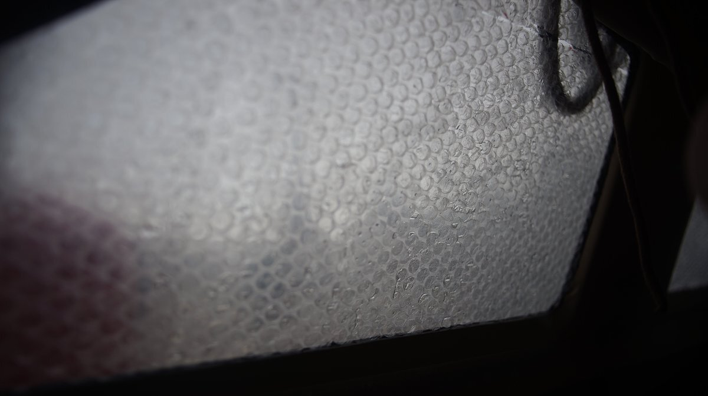
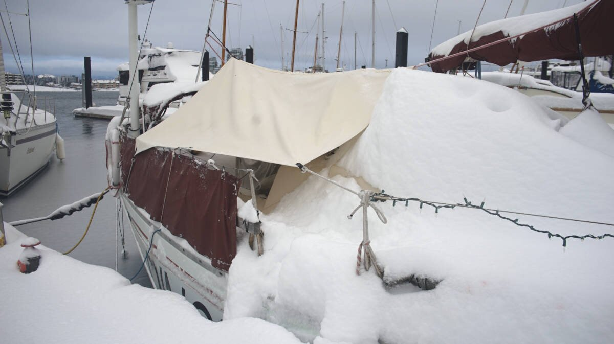

winter
Living aboard in areas with hard winters is tricky, especially if the boat is not insulated, and that is a problem since most boats aren't. Condensation in lockers can damage wood, it can cause rot and mold. A boat that isn't insulated will cost more to heat because the cold enters more readily, and because much of the warmth leaves the boat.
To keep the interior dry, it's necessary to get rid of the moisture generated by cooking and breathing, either by keeping a hatch open to promote good air circulation, or by using a dehumidifier(we don't use one). The source of heat on board, whether it's an electric heater, fuel or solid fuel stove, will warm the air as it circulates. The heat won't stay if your boat isn't insulated, but winter isn't the time to add insulation, it's better to wait for a drier, warmer season. If you try to use adhesives in cold weather, the materials won't bond to the hull.
When we cook, we crack open the companionway to allow the steam to escape, we don't have room for a vented ceiling fan in the galley so this is our best option. We have been aboard boats that have built fans and ducts to vent out the air, this is especially important if the galley is far from an opening, others have a hatch nearby that they can open to release the moisture.
A good winter setup requires both insulation and ventilation in the cabin. Insulation keeps the inside of the boat warm when it is cold out, and ventilation helps to eliminate condensation. Condensation forms because of the difference in temperature and the ambient humidity. There is no miracle solution to eliminating condensation, the only thing to do is to keep the air flowing. Add vents to every locker, elevate cushions, keep berths clear. If the air moves, moisture won't be as much of an issue. See how we insulated our boat.
Adding carpet to floor can help keep your toes warm.

The windows on a boat are another source of heat loss. It is a good idea to make curtains for each window, and in the winter to add a layer of bubble wrap in between it and the window. The bubble wrap adds a layer of protective insulation, acting as a sort of cheap double glaze. The bubble wrap traps condensation, which ought to then dry in the sun during the day. In our limited experience with liveaboard winters in the Pacific Northwest, the condensation always dries. People told us that mold may form between the bubble wrap and window because of the trapped moisture, but we never had issues with this.
If it is possible to remove panels on the cabin ceiling, install polyiso or XPS foam boards. Like the hull, these panels ought to be glued using spray foam or a high strength spray adhesive. Fill any gaps with polyurethane spray foam.
In the winter, a fresh layer of snow on deck can be a very good insulator. Fresh snow has a lot of air pockets between the ice crystals, which can slow the rate of heat loss inside the cabin.
We also got moisture prevention underliner to lay under the cushions so that the air can flow and inhibit the growth of mold and mildrew. However, it is good practice to lift the cushions to air them out even with a liner.
Insulating a boat
What you choose to insulate with depends on what is available locally, what has the best R-value per thickness, cost, and weight. Aiming for 1 inch of insulation is adequate in a Pacific Northwest Climate, but if the boat spends a lot of time in very, very cold weather, you will probably want to insulate thicker than 2.54 cm (1 in) to get more R-value.
Types of insulation
Closed-cell spray foam. R-value per inch of R-7. A good way to insulate a hull is polyurethane closed-cell spray foam. Closed-cell foams tend to be water-resistant due to the closed nature of the cells that make up the foam. The more small and compact these cells are, the more resistant to water the material will be. This is how people insulate narrowboats. Closed cell foam is designed to expand to about 2.54 cm (1 in) of thickness when sprayed. The closed cell also acts as a vapor barrier, so water and moisture won't come through. While insulating, it also provides extra wall strength and buoyancy. The foam is sprayed directly onto the inside of the hull and adheres well to most surfaces. The foam can be trimmed, and sanded (don't breathe the dust). Any foam that is cut loose its waterproof properties, and ought to be sealed. Generally, the foam is covered up with panelling for a nicer, cleaner finish.
Polyisocyanurate foam board. Polyiso has a R-value per inch of R-6. Sold as rigid sheets, these are bonded to the bare hull using a strong adhesive, or spray foam (helps to close gaps). Insulation of this type must be sealed, and well-secured to the backing surface with no air gaps.
Extruded Polystyrene (XPS) Foam Board. A rigid foam board with a R-value of R-5. They are typically blue, or pink(Foamular). Like polyiso, it doesn't retain water but performs better in cold weather. XPS is more bendable than polyiso if you have really curvy walls. XPS manufacturers use HFCs, making this not the greenest option. Can lose its effectiveness over time due to off-gassing, and can retain moisture if exposed for a long time.
Expanded Polystyrene Foam Insulation Boards(EPS). A rigid foam board with a R-value of R-4. EPS boards are more permeable to air and moisture than XPS, but it doesn't retain moisture to the same extent because of it's breathability which lets it dry out. EPS is, in other words, composed of 2% polystyrene and 98% air. The manufacturing process results in a closed-cell structure, but not a closed-cell insulation board (due to voids that can occur between the beads).
What else is there?
- Wool batts. $$. Renewable. Biodegradable. Doesn't rot. Heavy. Not cruelty-free. Low R-value/inch.
- Rockwool batts. $$$$. Lower R-value/inch. Difficult to buy in small quantities. Toxic.
- Fibreglass batts. $. Fairly low R-value/inch. Difficult to buy in small quantities. Not waterproof. Toxic.
- Denim batts. $$$. Fairly low R-value/inch. Not waterproof. Hard to source. Non toxic.
- Cork. $$$. Good R-value. Biodegradable. Waterproof. Hard to source. Insect proof. Sustainable.
- Thinsulate. $$$$ Very low R-value/inch. Waterproof. Easy to install. Non-toxic.
What about Reflectix? Reflectix is a reflective insulation which functions best in specific situations. If you do not provide air space, Reflectix has less insulating value. It is useful to insulate areas that are impractical to insulate using other means, say due to lack of space, like around pipes or restricted areas. The product reflects heat back, rather than mass insulation such as the material examples stated above. On a boat, it might be useful to insulate a mast, or outside windows to reflect heat. **Don't place reflectix inside windows, as it can reflect heat back too well and can warp the windows.
To see how we insulated part of Pino, see installing insulation.